Expression of type ExprTuple¶
from the theory of proveit.numbers.exponentiation¶
In [1]:
import proveit
# Automation is not needed when building an expression:
proveit.defaults.automation = False # This will speed things up.
proveit.defaults.inline_pngs = False # Makes files smaller.
%load_expr # Load the stored expression as 'stored_expr'
# import Expression classes needed to build the expression
from proveit import ExprTuple, a_star, b_star
from proveit.logic import And, Equals, FALSE
from proveit.numbers import Abs, GCD, frac, one, sqrt, two
In [2]:
# build up the expression from sub-expressions
expr = ExprTuple(And(Equals(Abs(sqrt(two)), frac(a_star, b_star)), Equals(GCD(a_star, b_star), one)), FALSE)
Out[2]:
In [3]:
# check that the built expression is the same as the stored expression
assert expr == stored_expr
assert expr._style_id == stored_expr._style_id
print("Passed sanity check: expr matches stored_expr")
In [4]:
# Show the LaTeX representation of the expression for convenience if you need it.
print(expr.latex())
In [5]:
# display the expression information
expr.expr_info()
Out[5]:
| core type | sub-expressions | expression | |
|---|---|---|---|
| 0 | ExprTuple | 1, 2 | |
| 1 | Operation | operator: 3 operands: 4 | 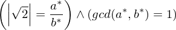 |
| 2 | Literal |  | |
| 3 | Literal |  | |
| 4 | ExprTuple | 5, 6 | 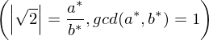 |
| 5 | Operation | operator: 8 operands: 7 | 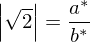 |
| 6 | Operation | operator: 8 operands: 9 | 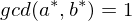 |
| 7 | ExprTuple | 10, 11 | 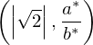 |
| 8 | Literal |  | |
| 9 | ExprTuple | 12, 24 | 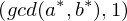 |
| 10 | Operation | operator: 13 operand: 14 | 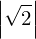 |
| 11 | Operation | operator: 22 operands: 16 | 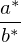 |
| 12 | Operation | operator: 15 operands: 16 | 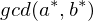 |
| 13 | Literal | ||
| 14 | Operation | operator: 17 operands: 18 |  |
| 15 | Literal | ||
| 16 | ExprTuple | 19, 20 | 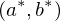 |
| 17 | Literal |  | |
| 18 | ExprTuple | 25, 21 |  |
| 19 | Variable | 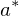 | |
| 20 | Variable |  | |
| 21 | Operation | operator: 22 operands: 23 |  |
| 22 | Literal |  | |
| 23 | ExprTuple | 24, 25 |  |
| 24 | Literal |  | |
| 25 | Literal |  |